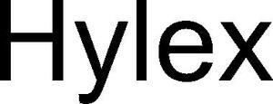

Trade Mark Journal No.2025/021 23 May 2025
WO0000001853446 (9,42)
Office of origin: Germany
Date of International Registration:23 December 2024
Date of designation in the UK:
23 December 2024

International priority date claimed: 5 July 2024
(Germany)
- Class 9
- Software (recorded) for managing associative information networks; content management software (recorded), in particular for websites and application programming interfaces (API); software (recorded) for managing artificial intelligence (AI) training data; software (recorded) for managing administrative data; software (recorded) for providing application programming interfaces (API); software (recorded) for management of media and documents; software (recorded) for database systems; computer programs (recorded) for managing associative information networks; computer programs (recorded), in particular for websites and application programming interfaces (API); computer programs (recorded) for managing artificial intelligence (AI) training data; computer programs (recorded) for managing administrative data; computer programs (recorded) for providing application programming interfaces (API); computer programs (recorded) for management of media and documents; computer programs (recorded) for database systems; computer programs (downloadable) for managing associative information networks; computer programs (downloadable) in particular for websites and application programming interfaces (API); computer programs (downloadable) for managing artificial intelligence (AI) training data; computer programs (downloadable) for managing administrative data; computer programs (downloadable) for providing application programming interfaces (API); computer programs (downloadable) for management of media and documents; computer programs (downloadable) for database systems.
- Class 42
- Providing temporary use of online non-downloadable operating software for accessing and using a cloud computing network and use for managing associative information networks; providing temporary use of online non-downloadable operating software for accessing and using a cloud computing network and use for content management, in particular for websites and application programming interfaces (API); providing temporary use of online non-downloadable operating software for accessing and using a cloud computing network and use for managing artificial intelligence (AI) training data; providing temporary use of online non-downloadable operating software for accessing and using a cloud computing network and use for managing administrative data; providing temporary use of online non-downloadable operating software for accessing and using a cloud computing network and use for providing application programming interfaces (API); providing temporary use of online non-downloadable operating software for accessing and using a cloud computing network and use for management of media and documents; providing temporary use of online non-downloadable operating software for accessing and using a cloud computing network and use for database systems; providing or rental of electronic memory space on the internet for managing associative information networks; providing or rental of electronic memory space on the internet for content management, in particular for websites and application programming interfaces (API); providing or rental of electronic memory space on the internet for managing artificial intelligence (AI) training data; providing or rental of electronic memory space on the Internet for managing administrative data; providing or rental of electronic memory space on the internet for providing application programming interfaces (API); providing or rental of electronic memory space on the internet for management of media and documents; providing or rental of electronic memory space on the internet for database systems; cloud hosting provider services for managing associative information networks; cloud hosting provider services for content management, in particular for websites and application programming interfaces (API); cloud hosting provider services for managing artificial intelligence (AI) training data; cloud hosting provider services for managing administrative data; cloud hosting provider services for providing application programming interfaces (API); cloud hosting provider services for management of media and documents; cloud hosting provider services for database systems; software as a service [SaaS] featuring software for managing associative information networks; software as a service [SaaS] featuring software for content management, in particular for websites and application programming interfaces (API); software as a service [SaaS] featuring software for managing artificial intelligence (AI) training data; software as a service [SaaS] featuring software for managing administrative data; software as a service [SaaS] featuring software for providing application programming interfaces (API); software as a service [SaaS] featuring software for management of media and documents; software as a service [SaaS] featuring software for database systems.
Systemantics GmbH
Representative: KÖNIG NAEVEN SCHMETZ Patent & Law Firm, Eupener Str. 2a, 52066 Aachen, GERMANY